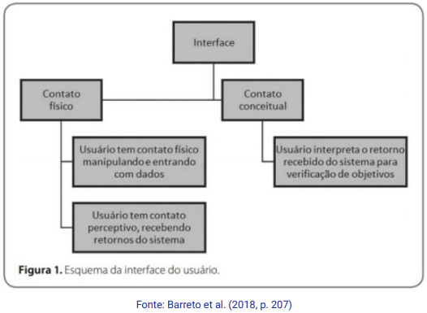

Disciplinas
INTERFACE HUMANO-COMPUTADOR-T01-2024-2 Concluído
Materiais
Vídeo 1 - [UFMS Digital] Interface Humano-computador - Módulo 4 - Unidade 2 sendProf.ª ministrante: Lucineide Rodrigues da Silva
Conteúdo
Prototipação de interface Web
Prototipação.
- Representa uma parte do sistema que está sendo projetado;
- Permite envolver os usuários para avaliação;
- Permite pensar e elaborar ideias de design com menor custo financeiro e de tempo.
- Protótipos são modelos que permitem aos stakeholders interagir e simular as funcionalidades do sistema que está sendo projetado;
- Protótipos podem ser feitos em baixo, médio ou alto nível
Prototipação de baixo nível.
- É construído rapidamente;
- Não se parece tanto com a solução final;
- Demanda que se explique o comportamento das telas;
- Pode ser feito com:
- Papel;
- Papelão;
- Isopor;
- Software.
https://encrypted-tbn2.gstatic.com/images?q=tbn:ANd9GcTAPBd6rkkU6Xm-o39rV_i9HjJ9xF7ya5euXIt7jX6ik6OaBEYm
- Representa a estrutura, as principais funcionalidades e navegação geral;
- É descartado e substituído por outros, melhorados;
- Não possui muito detalhamento.
https://i0.wp.com/blog.mbadmb.com/wp-content/uploads/2024/02/Wireframe.jpg?w=740&ssl=1
Prototipação de médio nível.
- Traz as vantagens dos protótipos de baixo e de alto nível;
- É construído com apoio de software;
- Apresenta apenas as funcionalidades mais importantes;
- Visualmente muito próxima do sistema final;
- Simula as ações do sistema.
https://media.licdn.com/dms/image/v2/C4D22AQGDIhbGKDm61Q/feedshare-shrink_800/feedshare-shrink_800/0/1665604116078?e=1730332800&v=beta&t=FVfdd_lZ3ExUZzDu1kB9TKMFGIUML-kZqD5YR0fXyPA
Prototipação de alto nível.
- É muito parecido com o que será a versão final do sistema;
- Construído já com as mesmas linguagens, frameworks, APIs do sistema final;
- Apresenta os componentes, as funcionalidades e os comportamentos.
- Permite analisar profunda e detalhadamente todos os aspectos de qualidade;
- Produzido quando os requisitos já estão consolidados;
- Levam mais tempo para serem construídos.
Relembrando: Interface.
Relembrando: Interação.
- É aquilo que acontece quando um usuário utiliza um sistema por meio da sua interface para chegar a algum objetivo;
- É o processo de comunicação do usuário com o sistema.
Referências:
BARRETO, Jeanine dos Santos; PASQUAL JÚNIOR, Paulo Antonio; BARBOZA, Fabrício Felipe Meleto; SARAIVA, Maurício de Oliveira; FRIGERI, Sandra Rovena. Interface humano-computador. Porto Alegre: Grupo A, 2018. ISBN 9788595027374. Capítulo 16. p. 203-212. Disponível na Biblioteca Digital da UFMS.